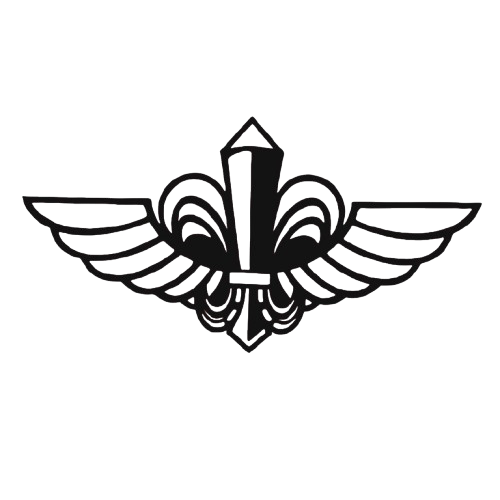

ביום שבת, השביעי לחודש אוקטובר 2023, בוקר שמחת תורה נקראה מדינת ישראל למערכה שתיחרט בדפי ההיסטוריה של עם ישראל.... סיירת צנחנים גייסה את עצמה מתוך חופשה והתייצבו במהרה ביישובי הדרום להגן על תושבי העוטף. תחילה כיחידים בעלי נשק, אט אט התאספו לכדי חוליות וצוותים ועד להשלמת הסיירת כמסגרת לוחמת מלאה אל מול המחבלים הארורים אשר חצו לשטח ישראל. במרוץ הזמן הוכיחו לוחמי הסיירת כי הם ממשיכי דרכם של גיבורי העבר ולחמו בארבע חזיתות שונות בתוך פחות משנתיים. החל מהלחימה בחזית העורף ביישובי העוטף, דרך התמרון ההיסטורי בעזה, אל היותם הלוחמים הראשונים לחצות את גבול הלבנון לתמרון מזה 20 שנה ועד להיות פורצי הדרך הראשונים אל תוך החזית הסורית. בכל אלו כתבו לוחמי הסיירת פרק חדש במורשת היחידה המפוארת. לוחמי הסיירת הוכיחו כי רוח הלחימה, ההקרבה והמקצועיות הם נר לרגליהם, בעומדם על המשמר, מוכנים תמיד לקריאה, יום ולילה, להגן על גבולות המדינה ולהכריע את האויב בכל מקום שיידרש.
התגייסות ספונטנית של לוחמי הסיירת והגעה ליישובי העוטף למאבק בכוחות שחדרו לשטח ישראל
לחימה ברצועת עזה - מבצע "חרבות ברזל". הסיירת ביצעה מגוון פעולות חשאיות בעומק השטח
פעילות מבצעית בחזית הצפון. לוחמי הסיירת היו בין הראשונים לחצות את גבול לבנון ולבצע משימות מיוחדות
מבצעים מיוחדים בעומק שטח האויב. פעולות ממוקדות שהובילו להישגים משמעותיים ולסיכול איומים על העורף הישראלי
הקמת מערך מיוחד עבור משימות חשאיות. צוותים ייעודיים הוכשרו לביצוע פעולות מורכבות מאחורי קווי האויב